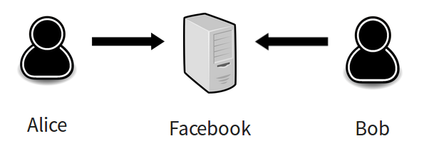

Votre vie ne vous
appartient plus
Si un jour ça m'ennuie d'être professeur, je lancerai une entreprise qui prédit des choses comme le fait de bien travailler en équipe et si vous prenez des drogues et êtes alcoolique. Et je vais vendre ces rapports à de grandes entreprises qui voudraient vous engager. On peut faire ça maintenant.
Jennifer Golbeck, université du Maryland - 2014
1 940 000 000 utilisateurs
7.84$/utilisateur/an
Centralisation
Propriété des données
Entreprise unique
Vinimay
Réseau social décentralisé, respectueux par design
Décentralisé
Auto-hébergeable
Logiciel libre
Propriété des données